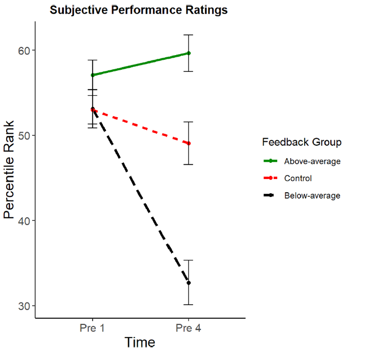
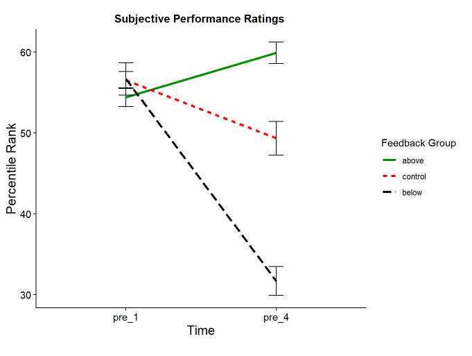
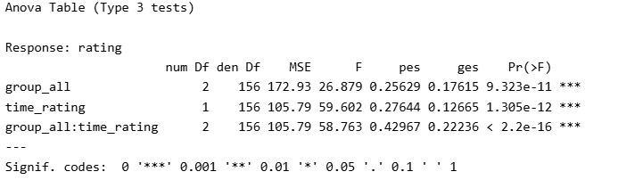
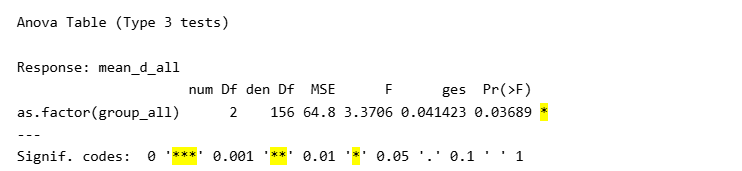
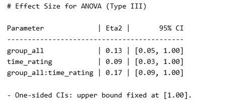
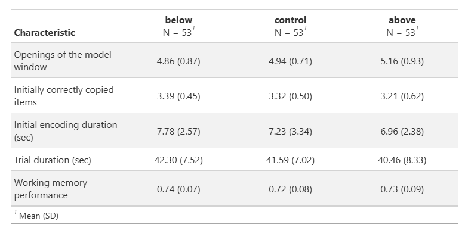
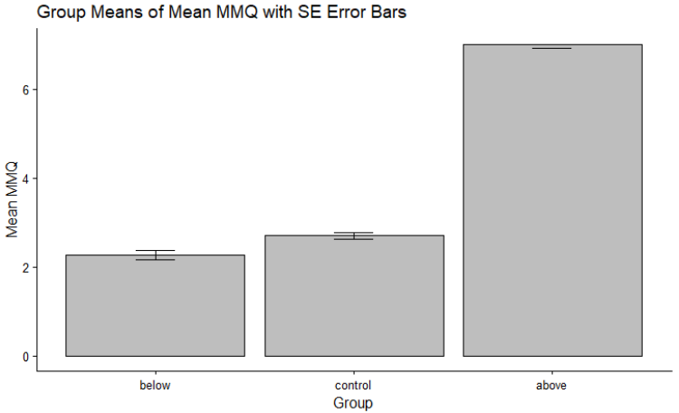

Checkliste Abschlussarbeit
Deadline: Sonntag, 14.06.2026, 23:55 Uhr
Abgabe: ZIP-Datei über ILIAS
Benennung der ZIP-Datei: vorname_nachname_abschlussarbeit.zip
Die beiden Quarto-Skripte müssen die vorgegebenen Dateinamen behalten: processing.qmd und analysis.qmd. Bitte benennt diese Dateien nicht um.
Gerenderte Dokumente können als HTML oder PDF abgegeben werden.
Ziel der Abschlussarbeit
Ihr arbeitet mit individuell simulierten Datensätzen. Jede Person erhält 7 separate Rohdatensätze, die geprüft, bereinigt und zusammengeführt werden müssen.
Die simulierten Daten stellen realistische mögliche Stichproben des Originalexperiments dar. Das bedeutet:
- Die Variablen haben denselben Wertebereich wie in der Originalstudie.
- Die grundlegende Datenstruktur entspricht der Originalstudie.
- Die Stichproben sind zufällig generiert.
Eure Ergebnisse werden nicht identisch zur Originalstudie sein. Signifikanzen, Mittelwerte, Standardabweichungen und Effektstärken können von den Ergebnissen der Originalstudie abweichen.
Das ist kein Fehler, sondern eine realistische Eigenschaft empirischer Daten.
Daten und Ausgangslage
Ihr erhaltet 7 Rohdatensätze. Diese Rohdaten enthalten gezielt eingebaute Inkonsistenzen und Fehlerquellen. Diese sind Teil der Aufgabe und müssen systematisch identifiziert, bereinigt und nachvollziehbar dokumentiert werden.
Die Datenaufbereitung erfolgt im Skript processing.qmd. Ziel ist die Erstellung zweier analysefähiger Datensätze:
dat_fullim Wide-Formatdat_longim Long-Format
Beide Datensätze werden im Ordner data/processed gespeichert.
Datenaufbereitung im processing-Skript
Ziel der Datenaufbereitung ist ein konsistenter, vollständiger und analysefähiger Datensatz. Achtet dabei nicht nur darauf, dass der Code funktioniert, sondern auch darauf, dass eure Bereinigungsschritte inhaltlich sinnvoll und nachvollziehbar sind.
Systematische Datenprüfung
Die Rohdaten enthalten verschiedene Arten von Inkonsistenzen und Fehlerquellen. Diese können sowohl strukturell als auch inhaltlich auftreten.
Ziel ist es, alle potenziellen Probleme systematisch zu identifizieren und zu bereinigen.
Mögliche Fehlerquellen: Checkliste
Die folgenden Punkte stellen typische Probleme dar, die in den Datensätzen auftreten können. Nicht jeder Fehler tritt in jedem Datensatz auf.
Prüft die Datensätze schrittweise und dokumentiert eure Entscheidungen im Code. Ziel ist nicht nur das Finden von Fehlern, sondern ein nachvollziehbarer und begründeter Umgang mit diesen.
Rekodierung von Items
- Gibt es Items, welche noch zu rekodieren sind?
Umgang mit fehlenden Werten
- Gibt es vollständig leere Beobachtungen (z.B. leere Zeilen)?
- Gibt es Personen mit fehlenden Werten, die von der Analyse ausgeschlossen werden müssen?
Umgang mit unmöglichen Werten
- Gibt es unmögliche Werte in den Daten (z.B. -999)? Wie können diese Daten sinnvoll behandelt oder ersetzt werden?
Überprüfung und Anpassung von Datentypen
- Gibt es Variablen, welche nicht den korrekten Datentyp haben (z.B. numerische Variablen, die als character definiert sind)? Schaut euch die Variablen genau an!
Überprüfung von Variablennamen
- Sind die Variablen konsistent und nach snake_case benannt?
Redundanz und irrelevante Inhalte
- Gibt es doppelte Variablen (d.h. gleicher Inhalt unter anderem Namen)?
- Gibt es zusätzliche Variablen ohne inhaltliche Bedeutung?
- Gibt es Personen, welche im Datensatz doppelt vorkommen?
Weitere Verarbeitungsschritte
Nach der Bereinigung der einzelnen Rohdatensätze folgen weitere Verarbeitungsschritte:
- Zusammenführen der 7 Datensätze
- Bereinigung redundanter Variablen
- Umbenennung von Variablen, falls notwendig
- Berechnung zentraler Variablen, z. B.
mmq_mean - Erstellung eines Long-Datensatzes
- Speicherung von
dat_fullunddat_long
Dokumentation von Entscheidungen
Alle Schritte der Datenaufbereitung müssen:
- im Code nachvollziehbar sein,
- begründet werden können,
- konsistent umgesetzt werden.
Es gibt selten nur eine richtige Lösung. Entscheidend ist, dass eure Entscheidungen fachlich sinnvoll, konsistent umgesetzt und für andere Personen nachvollziehbar sind.
Die Nutzung von LLMs ist zulässig, muss jedoch transparent in den Quarto-Skripten dokumentiert werden, z. B. durch Kommentare im Code. Die Verantwortung für alle Inhalte liegt vollständig bei den Studierenden.
Analysen im analysis-Skript
Im Skript analysis.qmd werden die für die Analysen notwendigen Vorbereitungen durchgeführt, z. B. das Setzen von Faktoren. Anschliessend werden alle Analysen aus dem Datenanalyseplan umgesetzt.
Durchzuführende Analysen
- Deskriptive Statistik: Mittelwerte und Standardabweichungen entsprechend Tabelle 1
- 2 × 3 Mixed ANOVA für subjektive Leistungseinschätzungen
- inkl. post-hoc t-Tests
- inkl. Effektstärken: η² und Cohen’s d
- One-Way ANOVAs für:
- die drei Offloading-Variablen
- Trial Duration in der Pattern Copy Task
- MMQ, inkl. post-hoc t-Tests
- Arbeitsgedächtnisleistung in der Feature Switch Detection Task
- jeweils inkl. Effektstärken, insbesondere η²
- Erstellung einer Tabelle oder Abbildung aus der Studie nach Wahl
Optional: Voraussetzungen testen
Das Testen der Voraussetzungen ist optional. Wenn Voraussetzungen geprüft werden, muss dies im Datenanalyseplan beschrieben werden. Bei Verletzungen der Voraussetzungen soll angemessen reagiert werden.
Post-hoc-Tests werden nur für die 2 × 3 Mixed ANOVA und die MMQ-ANOVA erwartet. Sollten andere ANOVAs zufällig signifikant werden, sind dafür keine zusätzlichen Post-hoc-Tests erforderlich.
Anpassungen im Datenanalyseplan
Folgende Punkte müssen im Datenanalyseplan angepasst werden:
- Data Access
- Data Identifiers
- Data Collection Procedures
- Missing Data
- Unit of Analysis / Data Exclusion
Anpassungen im Codebook
Folgende Punkte müssen im Codebook angepasst werden:
- Reverse Coding dokumentieren
- Umgang mit Missing Data dokumentieren
- Data Collection Procedures: Simulierte Daten
Ordnerstruktur der Abgabe
Die vorgegebene Ordnerstruktur ist einzuhalten.
data/
├── raw/ # unveränderte Rohdaten
├── processed/ # bereinigte Datensätze
└── codebook
code/
├── processing.qmd
├── analysis.qmd
└── gerenderte Outputs (HTML oder PDF)
preregistration/
└── DatenanalyseplanDie Rohdaten im Ordner data/raw werden nicht verändert. Alle bereinigten Datensätze werden im Ordner data/processed gespeichert.
Self-Check: Plausibilität der Ergebnisse
Die Ergebnisse sollten sich am Muster der Originalstudie orientieren, aber nicht identisch sein. Einzelne Abweichungen sind aufgrund der zufällig simulierten Stichproben erwartbar.
Was ist plausibel?
Plausible Ergebnisse zeigen in der Regel:
- ähnliche Muster zwischen den Gruppen,
- vergleichbare Grössenordnungen,
- dieselbe Richtung zentraler Effekte.
Was kann variieren?
Folgende Abweichungen sind erwartbar und unproblematisch:
- Signifikanz einzelner Effekte
- exakte Mittelwerte und Standardabweichungen
- Effektstärken
Kleine Unterschiede sind normal. Systematische Abweichungen, die das Gesamtbild stark verändern, sollten überprüft werden.
Wann ist Vorsicht geboten?
Ein Warnsignal liegt vor, wenn:
- das Gesamtmuster stark von der Originalstudie abweicht,
- zentrale Effekte sich umkehren,
- Wertebereiche offensichtlich nicht plausibel sind,
- eine Abbildung oder Tabelle ein komplett anderes Bild vermittelt als erwartet.
In solchen Fällen sollte zuerst die Datenaufbereitung überprüft werden. Wenn ihr euch weiterhin unsicher seid - meldet euch bei uns!
Beispiele für plausible Ergebnisse
Die folgenden Beispiele zeigen, wie Ergebnisse aus einem simulierten Datensatz im Vergleich zur Originalstudie aussehen können. Die Werte müssen nicht identisch sein, das grundlegende Muster sollte aber vergleichbar bleiben.
Originale Ergebnisse

Beispiel aus einem simulierten Datensatz

Auch die statistischen Ergebnisse können ähnlich, aber nicht identisch ausfallen:

Erwartbare Abweichungen
Zufällig signifikante Effekte, die in der Originalstudie nicht signifikant waren, sind möglich. Das bedeutet nicht automatisch, dass ein Fehler vorliegt.

Einzelne Werte, Deskriptiva und Effektstärken können von der Originalstudie abweichen.

Auch Mittelwerte und Standardabweichungen werden nicht exakt identisch sein.

Unplausible Ergebnisse
Ergebnisse, die ein komplett anderes Gesamtbild erzeugen, sind nicht zu erwarten. Solche Resultate sind ein Hinweis darauf, dass die Datenaufbereitung oder Analyse noch einmal überprüft werden sollte.

Wichtig zum Schluss
Diese Checkliste dient als Orientierung. Sie ersetzt nicht:
- eigenständiges Denken,
- systematische Datenprüfung,
- begründete Entscheidungen.
Bewertungsperspektive
Eine überzeugende Arbeit zeigt:
- sorgfältige und systematische Datenaufbereitung,
- nachvollziehbare Entscheidungen,
- korrekte Umsetzung der Analysen,
- sinnvolle Interpretation der Ergebnisse.